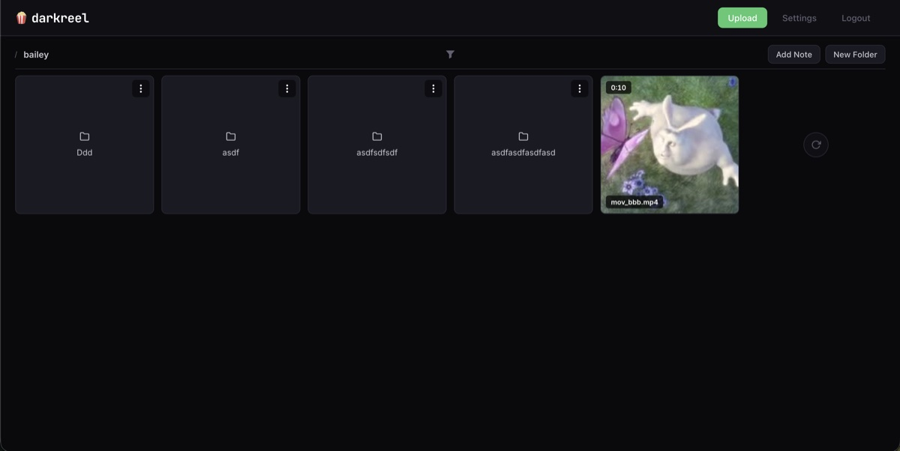

darkreel 🍿
A self-hosted app for storing and streaming media with end-to-end encryption. An exercise in private, secure and performant agentic software development. Pairs well with PPVDA and darkreel-cli.

I'm a software engineer at Flexport. I have experience building services and APIs that power complex applications. I like handling software integrations and really dig distributed systems.
I've also spent a large portion of my career working with machine learning models, first by building the infrastructure and tooling necessary to support them, and more recently by leveraging frontier models to build powerful client-facing features. Now I literally work with them every day.
The amount of progress these last few years has been astonishing and has made me incredibly excited for what comes next in the intelligence era. I'm currently studying ML at Georgia Tech to better comprehend how we got here and where we might be going.
In May of 2020 🦠, after a short internship at DNSFilter (2016 - 2017) and about a year and a half of co-op dev work at WetStone (2018 - 2020), I graduated from Coastal Carolina University with a B.S. in Computer Science. I then relocated from South Carolina to the Houston-area to work full-time as a SWE at NASA's Johnson Space Center 🚀.
A little over a year later I accepted a fully remote position with Press Ganey (NarrativeDx). I grew a lot in that role and it also afforded me the opportunity to work from anywhere in the states.
I visited Seattle in February of 2022 and fell in love with it, so eight months later I packed up my things and drove across the country. I joined Flexport in April of 2023.
I've been a computer geek pretty much my entire life. In middle school I was building webpages, learning TI-BASIC and writing some pretty bad games in Python. I had the opportunity to join a CS program during high-school and also started my first internship senior year.
While I've landed on ML and software engineering, I was pretty interested in cybersecurity growing up. It led me to some security conferences, CTF-events and eventually to me landing that co-op position with WetStone (doing development to support their security/digital forensics tools). I think it was there I realized I was less interested in security professionally and really just liked building software.
When I'm not at my desk I enjoy live music, hiking, longboarding, playing guitar and making coffee ☕.